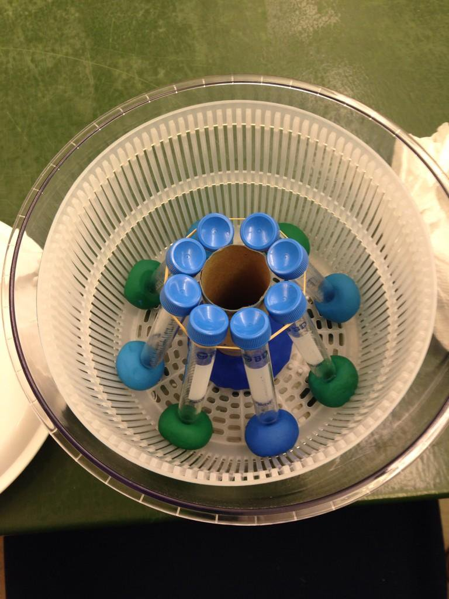

A Salad Spinner Centrifuge

Need just a little bit of centrifuging? Consider the humble salad spinner
-> And here's a tutorial on how to build one to fit 50 ml Centrifuge Tubes.


Need just a little bit of centrifuging? Consider the humble salad spinner
-> And here's a tutorial on how to build one to fit 50 ml Centrifuge Tubes.